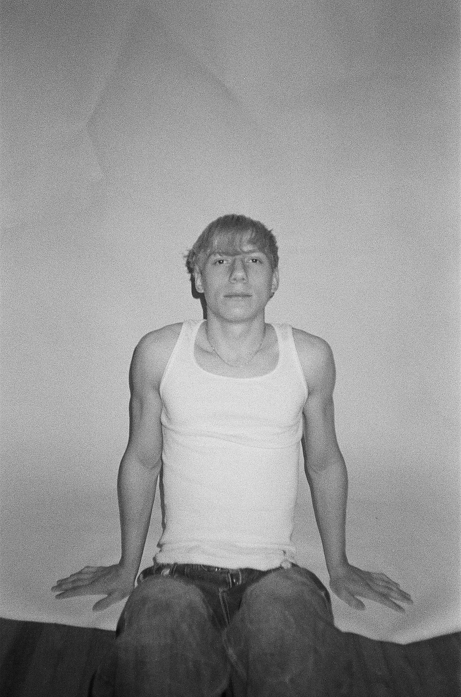
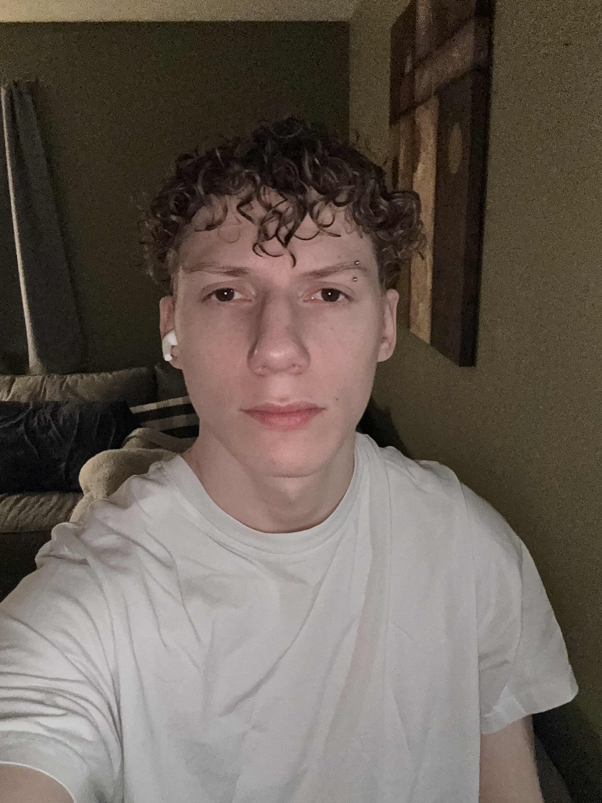
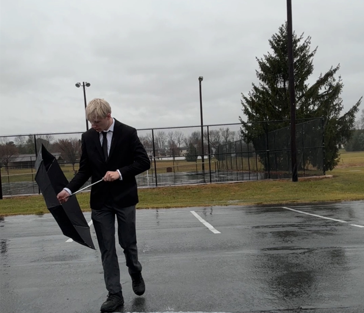

Editorial test shoot — Photographer: Luke Lowell
MODEL PORTFOLIO TEMPLATE

PHOTO: LUKE LOWELL
Dane is a 6'0 model based in Philadelphia focusing on editorial and runway. This static version keeps the visible portfolio pieces from the original app so you can keep refining the look, copy, and layout over time without needing Flask.
AVAILABLE FOR TEST SHOOTS, EDITORIAL, AND BRAND COLLABORATIONS.
ALL IMAGES ARE PRESENTED WITHOUT RETOUCHING.
DANE IS NOT AFFILIATED WITH ANY BRANDS PRESENTED.
Editorial test shoot — Photographer: Luke Lowell

Editorial test shoot — Photographer: Luke Lowell

Editorial test shoot — Photographer: Luke Lowell

Curly hair concept — Photographer: Dane Fortun

Tailored suit editorial — Photographer: Dane Fortun

Professional suit look — Photographer: Vincent Michael Kovacs Jr.

Classic white shirt editorial — Photographer: Dane Fortun